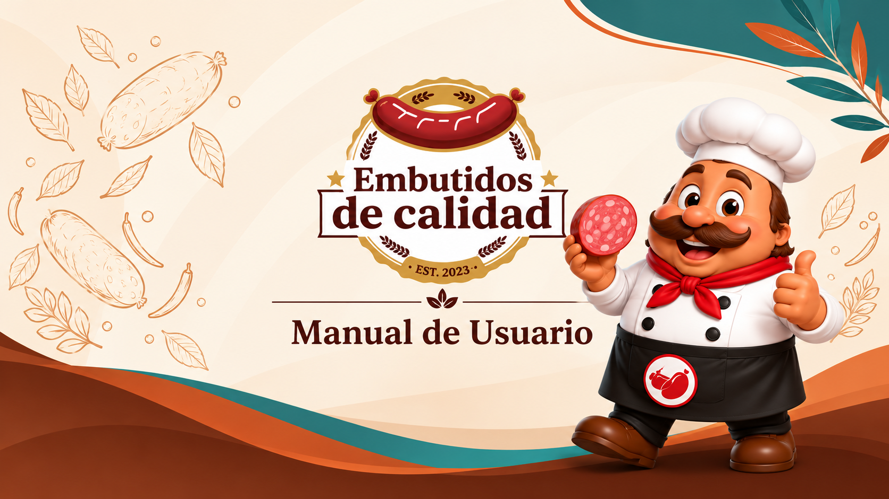
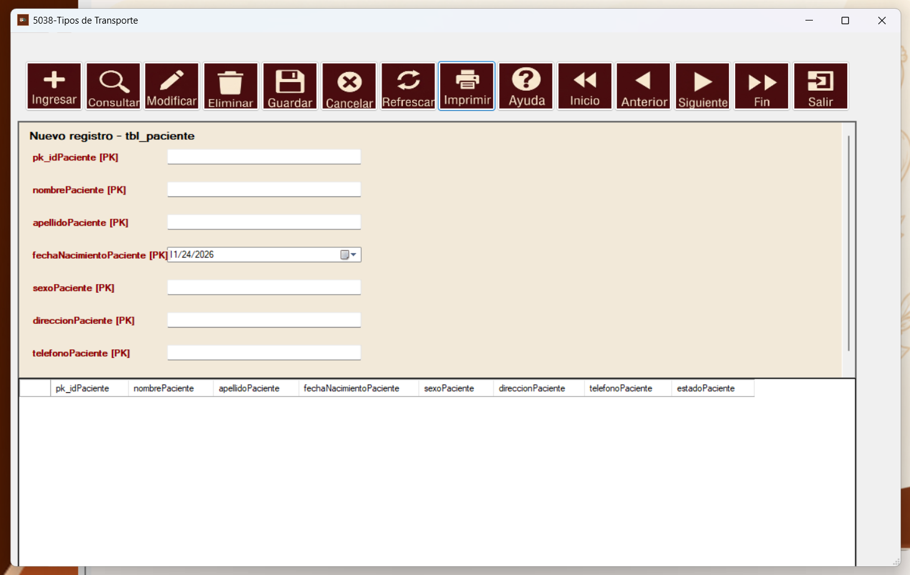

El formulario está organizado en cuatro secciones numeradas: 1. Selección del servicio de transporte, 2. Información del transportista, 3. Detalle del servicio a pagar y 4. Información del Pago. A la derecha aparece el resumen y los botones principales.
